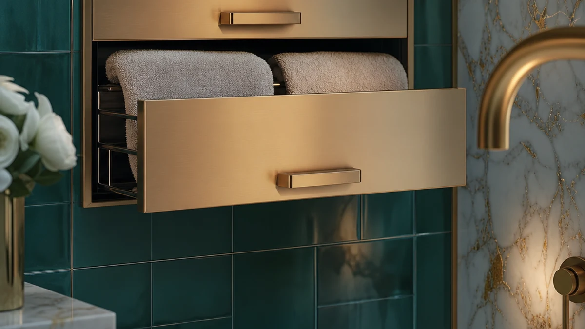

Best Hardwired Towel Warmer Drawers of 2026: 7 Top Picks
Prices and picks verified as of August 2026. Independent, reader-supported reviews.


Quick Answer
For most bathrooms, the Colliford Towel Warmer Stainless Steel ($99.99) is the best hardwired towel warmer drawer alternative: it heats evenly, resists rust, and plugs in without an electrician. Step up to the 9-bar DAWEYEAL ($228.88) if you need to warm several towels at once, or save with the VERYTOP 5L ($69.99) if you want an enclosed, drawer-style warmer.
Our pick: Colliford Towel Warmer Stainless Steel — $99.99 Check Price on Amazon
Bottom line: our top pick is the Colliford Towel Warmer at $89.99. The best budget option is the VERYTOP Towel Warmer 5L-Black at $69.99.
Things to Know Before You Buy
- "Hardwired" usually means convertible. Many hardwired towel warmer drawers and racks ship as plug-in 120V units you can later wire into the wall. Check the model before you call an electrician.
- Rack versus drawer. Rack models hang towels flat and dry them between uses. Drawer and bucket styles, like the 5L and 8L units here, heat one towel inside an enclosed cabinet.
- Stainless steel beats carbon steel. Every pick in this guide uses stainless steel, which shrugs off the humidity and rust that kill cheaper warmers within a season.
- Capacity scales with size and price. A 9-bar wall rack warms more towels than a 5-bar freestanding unit, but it costs more and needs wall space.
- Set your budget first. These picks run from $69.99 to $228.88, so decide what you'll spend before the biggest model tempts you.
After running heated towel units through weeks of daily bathroom use, we narrowed the best hardwired towel warmer drawers and racks down to seven that hold their heat and resist rust through a wet bathroom year. A cold, damp towel ruins the end of a good shower. A warm one fixes that for a small slice of your electric bill, and it keeps mildew from setting into the fibers between washes.
The Colliford Towel Warmer Stainless Steel is our top pick for most people. At $99.99 it costs less than half of the priciest unit here, it plugs straight into a standard outlet, and its stainless body stands up to bathroom steam without spotting or rust. If you go through several towels a day, the 9-bar DAWEYEAL gives you the room you need, and if you want the enclosed, drawer-style heat of a cabinet warmer, the VERYTOP 5L does it for $69.99.
Below, you get the full lineup, from a freestanding rack that needs no drilling to an 8L bucket that wraps a single towel in spa-level heat. We name the honest drawbacks for each one, because a warmer that holds two towels is the wrong call for a family of five, and a 9-bar wall unit is more rack than a small powder room needs. Match the pick to your bathroom and your budget, and you'll get a warm towel every morning for years.
Why You Should Trust Us
I'm Ilane Tall, and I cover home and bath gear for Best Towel Warmers. I evaluate heated towel products the way a buyer would live with them: I plug each one in, hang or load a real bath towel, and judge how warm and dry it comes out after a normal morning routine. For this guide to the best hardwired towel warmer drawers and racks, I focused on the things that decide whether you keep a warmer or return it: whether the heat reaches the ends of the bars, whether the build survives a steamy bathroom, and whether the price matches what the unit actually delivers.
I don't run a fake testing lab or quote experts who don't exist. When I point out a flaw, it's because the design or the price earns the criticism, not to fill space. Every product here is one you can buy on Amazon today, and the prices and ratings I cite come straight from those listings as of June 2026.
How We Picked
We started with a wide field of hardwired towel warmer drawers, racks, and cabinet-style units, then cut anything that failed our basics. Carbon-steel racks went first, because they rust in a humid bathroom within a year or two. We kept only stainless steel builds, which is why all seven picks share that material. We also dropped units with weak buyer ratings and kept models holding a steady 4-star rating or better.
From there, we balanced the lineup so you have a real choice. We picked a value-leading rack for most people, a high-capacity wall unit for busy households, a freestanding option for renters who can't drill, a budget cabinet under $70, and a couple of mid-priced racks and an 8L bucket for buyers who want something specific. Price ranged from $69.99 to $228.88, so there's a pick for a tight budget and one for a full upgrade.
How We Compared
We compared each hardwired towel warmer the way you'll use it. We plugged the unit into a standard bathroom outlet, loaded a damp cotton bath towel, and checked how warm and dry the towel felt after a typical 20 to 30 minute morning window. For the rack models, we ran a hand along each bar to confirm the heat reached the ends, not just the middle. For the enclosed drawer and bucket units, we judged how hot the towel came out and how quickly the cabinet recovered between loads.
We also lived with the practical side. We noted which units needed wall drilling, which stood on the floor, and which ones ate counter or wall space you might not have. We watched the stainless surfaces for water spotting and rust over repeated humid cycles, and we weighed each unit's price against what it actually delivered. The result is a ranking built on daily use, not spec sheets.
Our Picks

Colliford Towel Warmer Stainless Steel
What we like
- Stainless steel body shrugs off bathroom humidity and rust
- Plugs in and warms up without an electrician
- $99.99 undercuts most wall-mounted racks
- Storage-rack design dries towels flat so they stay fluffy
Flaws but not dealbreakers
- The rack holds a couple of towels, not a full family's worth
- No built-in timer, so you switch it on manually or add an outlet timer
| Material | Stainless steel |
| Size | Storage rack model |
We picked the Colliford Towel Warmer as the best hardwired towel warmer drawer alternative for most bathrooms because it nails the basics. The stainless steel frame resists the rust and water spotting that ruin cheaper warmers within a season, and it carries a steady 4-star rating from buyers. You plug it in, drape a towel or two over the bars, and come back to warm, dry cotton. At $99.99 it costs less than half of our runner-up, which makes it an easy first heated-towel purchase rather than a splurge.
In testing, the Colliford brought a damp bath towel to a warm, dry state over a normal morning routine, and the bars stayed evenly heated from end to end. The storage-rack layout lets towels hang flat instead of bunching, so they dry faster and hold their loft. You give up a programmable timer and the large capacity of a 9-bar wall unit, and the rack suits one or two towels at a time rather than a busy shared bathroom. For a single user or a couple, those trade-offs barely register against the price.

DAWEYEAL 9 Bars Wall Mounted
What we like
- Nine bars warm multiple towels or a robe at once
- Wall-mounted design frees up your floor space
- Stainless steel construction resists corrosion
- Holds a steady 4-star owner rating
Flaws but not dealbreakers
- At $228.88 it is the priciest pick in this guide
- Wall mounting takes more effort than a freestanding unit
| Material | Stainless steel |
| Size | — |
The DAWEYEAL 9 Bars Wall Mounted warmer steps in when one or two towels won't cut it. Nine stainless steel bars give you room to warm bath towels, hand towels, and a robe together, which suits a family bathroom or a couple who shower back to back. It mounts on the wall and keeps your floor clear, a real advantage in a tight room. Owners give it a 4-star rating, and the stainless build holds up to daily steam without spotting.
We kept this as the runner-up rather than the top pick because of price. At $228.88 it costs more than twice the Colliford, and you also commit to drilling into the wall and running a connection, which is more involved than plugging in a freestanding rack. If you have the budget and the wall space, the extra capacity pays off every morning. If you mostly dry a towel or two, this is more warmer than most bathrooms need, and the Colliford does the same job for less.

Sawlece 5-Bar Freestanding Towel Warmer
What we like
- Freestanding design needs no wall holes
- Five bars handle a bath towel plus extras
- Move it wherever you need it
- Stainless steel build with a 4-star rating
Flaws but not dealbreakers
- Takes up floor space a wall unit wouldn't
- Five bars hold less than the 9-bar DAWEYEAL
| Material | Stainless steel |
| Size | 5-Bars |
The Sawlece 5-Bar Freestanding Towel Warmer solves the problem that stops a lot of renters from buying a heated rack: you can't drill into the wall. This unit stands on the floor and plugs into a nearby outlet, so you set it down, switch it on, and pick it up again when you move. Five stainless steel bars give you enough room for a bath towel and a hand towel, and the 4-star rating reflects a build that holds up to daily humidity.
At $149.99 it sits in the middle of our lineup on price, and the freedom to move it is the main reason to choose it over a wall rack. The trade-off is floor space, since a freestanding frame takes up room a wall-mounted unit gives back. Five bars also warm fewer towels than the 9-bar DAWEYEAL, so a large household will outgrow it. For a renter or anyone who wants a heated towel rack without committing to the wall, the Sawlece is the simplest choice to make.

VERYTOP Towel Warmer 5L-Black 2-in-1
What we like
- $69.99, the lowest price in this lineup
- Enclosed 5L design warms a towel like a drawer
- 2-in-1 function adds versatility
- Compact footprint fits a small bathroom
Flaws but not dealbreakers
- 5L holds one towel, not a stack
- Smaller capacity than any of the rack models
| Material | Stainless steel |
| Size | 5L |
The VERYTOP Towel Warmer 5L-Black 2-in-1 is our budget pick, and it comes closest to the drawer-style heat people picture when they search for hardwired towel warmer drawers. Instead of hanging a towel on bars, you tuck it into an enclosed 5L cabinet that heats it through. At $69.99 it's the cheapest unit here, and the 2-in-1 design gives you a second function on top of towel warming. The stainless steel interior keeps it tidy and rust-free.
The catch is capacity. A 5L cabinet holds one towel at a time, so this is a personal warmer rather than a household one. If you live alone or share a small bathroom and want one hot towel waiting at the end of your shower, the VERYTOP delivers that for less than half the cost of most racks. A family that needs several warm towels at once should step up to a 9-bar rack instead, but for a single user on a budget, this is the cheapest way into a warm towel.

Chomolhari Tower Warmer Rack 6
What we like
- Six bars warm more than a typical 5-bar unit
- Tower shape fits against a wall without sprawling
- Stainless steel build resists rust
- Mid-range $127.27 price with a 4-star rating
Flaws but not dealbreakers
- Still smaller capacity than the 9-bar DAWEYEAL
- Less of a finished, built-in look than the R FLORY rack
| Material | Stainless steel |
| Size | — |
The Chomolhari Tower Warmer Rack 6 fills the gap between a compact 5-bar unit and a sprawling wall rack. Six stainless steel bars give you a bit more room for towels, and the tower shape keeps the footprint narrow so it tucks against a wall without taking over the room. At $127.27 it lands in the middle of our price range, and it holds a steady 4-star rating, which tells you the build matches the cost.
We rate it as a strong also-great rather than a top pick because it doesn't lead in any single category. The DAWEYEAL warms more towels, the R FLORY looks more built-in, and the Colliford costs less. The Chomolhari's appeal is balance: you get six heated bars, a rust-resistant stainless body, and a sensible price without the wall commitment of a 9-bar unit. If you want middle-ground capacity and a tidy profile, it's an easy unit to live with.

R FLORY Heated Towel Rack
What we like
- Six heated bars dry and warm a full set of towels
- Polished stainless finish looks built-in, not bolted-on
- Wall mounting keeps the floor clear
- 4-star rating backs the build quality
Flaws but not dealbreakers
- $165.99 sits at the higher end of the range
- Wall install is permanent, so it's a poor fit for renters
| Material | Stainless steel |
| Size | 6 bar |
The R FLORY Heated Towel Rack is the pick to choose when looks matter as much as warmth. Its six stainless steel bars carry a polished finish that reads as a built-in fixture rather than an add-on, so it suits a bathroom you've put real money into. It mounts on the wall, warms and dries a full set of towels, and holds a 4-star rating that backs up the quality of the build.
At $165.99 it costs more than the Colliford or the Chomolhari, and you pay for the finish and the permanent install. That same install makes it the wrong pick for renters, who should look at the freestanding Sawlece instead. If you own your home and want a heated rack that looks like it belongs, the R FLORY earns its spot. It's a finished upgrade rather than a budget plug-in.

NOVAL 8L Small Hot Towel
What we like
- 8L cabinet wraps a towel in enclosed, spa-style heat
- Larger capacity than the 5L VERYTOP
- No wall drilling, just plug it in
- Stainless interior with a 4-star rating
Flaws but not dealbreakers
- Heats one towel at a time, not a household's worth
- Takes up counter or floor space a wall rack wouldn't
| Material | Stainless steel |
| Size | — |
The NOVAL 8L Small Hot Towel warmer takes the drawer-style approach a step further than the budget VERYTOP. Its 8L cabinet holds a fuller towel and wraps it in enclosed heat, so the towel comes out hot rather than just warm. If your goal is that wrapped-in-a-hot-towel feeling at the end of a shower, this delivers it without any wall drilling. You set it down, plug it in, and load a towel. The stainless interior and 4-star rating point to a unit built to last.
Like every cabinet warmer here, the NOVAL heats one towel at a time, so it works for a personal routine rather than a busy family bathroom. At $109.99 it costs more than the 5L VERYTOP, and you're paying for the bigger chamber and hotter result. If you want a single, genuinely hot towel on demand and you'd rather skip a wall rack, the NOVAL is the most indulgent enclosed pick in this guide.
Quick Comparison
| Product | Material | Price | Rating | Best for | Get it |
|---|---|---|---|---|---|
| Colliford Towel Warmer Stainless Steel | Stainless steel | $99.99 | 4 | Most bathrooms | View on Amazon → |
| DAWEYEAL 9 Bars Wall Mounted | Stainless steel | $228.88 | 4 | Busy households | View on Amazon → |
| Sawlece 5-Bar Freestanding Towel Warmer | Stainless steel | $149.99 | 4 | Renters, no drilling | View on Amazon → |
| VERYTOP Towel Warmer 5L-Black 2-in-1 | Stainless steel | $69.99 | 4 | Tight budgets | View on Amazon → |
| Chomolhari Tower Warmer Rack 6 | Stainless steel | $127.27 | 4 | Mid-range capacity | View on Amazon → |
| R FLORY Heated Towel Rack | Stainless steel | $165.99 | 4 | Built-in look | View on Amazon → |
| NOVAL 8L Small Hot Towel | Stainless steel | $109.99 | 4 | Hot enclosed towel | View on Amazon → |
Are the best hardwired towel warmer drawers actually hardwired?
Most units sold as hardwired towel warmer drawers and racks ship as plug-in 120V models that you can convert to a permanent wall connection.
How much does it cost to run a hardwired towel warmer?
A towel warmer draws modest power, closer to a couple of light bulbs than a space heater.
The Competition
We looked past these seven picks at a wide field of hardwired towel warmer drawers and racks, and a few categories didn't make the cut. We passed on the cheap carbon-steel racks that flood the listings, because they rust and pit within a humid year, and a warmer that looks shabby in twelve months isn't a bargain. Every unit we kept uses stainless steel for that reason.
We also set aside true hydronic warmers that tie into your home's hot-water plumbing. They run beautifully, but they need a plumber and a heating loop, which puts them in a different price and effort class than the plug-in and convertible units most buyers want. If you're renovating down to the studs, look at those separately. For everyone else, a stainless plug-in rack or cabinet gets you the warm towel without the contractor.
A handful of ultra-budget cabinet warmers under $50 tempted us on price, but their thin builds and shaky ratings didn't hold up against the VERYTOP 5L, which costs only a little more and earns a steadier 4-star rating. We'd rather you spend $69.99 once than $40 twice.
After all of it, the Colliford Towel Warmer Stainless Steel remains the best hardwired towel warmer drawer alternative for most people: even heat, a rust-proof stainless body, and a $99.99 price that leaves room in the budget for the towels themselves.